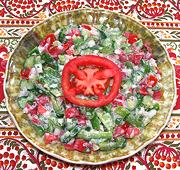

|
Bulgarian Shopska SaladBulgaria - Shopska Salata | ||||
| Serves: Effort: Sched: DoAhead: |
5 salad ** 2+ hrs hrs Most |
This salad is rather different from the standardized Soviet Shopska now served all over the Balkans. Perhaps this is how it was made in Bulgaria before the Soviet era. | |||
|
12 1/2 14 12 1 5 1 2/3 ----- 1/3 |
oz t oz oz oz T t --- c |
Cucumbers (1) Salt Tomatoes, ripe Sweet Peppers (2) Chili Serrano (3) Onions Parsley Salt -- Dressing Sour Cream (4) |
The author of the pattern recipe, a noted Romanian gourmet, also has a recipe similar to the standard Soviet Shopska, calling it "Yugoslav Shopska". Make: - (2+ hrs - 45 min work)
|